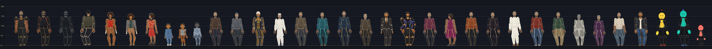

Every character of the cut-out suite run through the same six Acting Arena takes. Each one is built from its own painted Kit 3 cards. Each puppet is solved for its own body (fused skirt, back-only, child, wings, code-drawn dummy). Everything below was measured on the render, at 640×360 and about 1.4 px per cm, so one pixel is about 0.7 cm. Failed takes are kept.
The battery and the checks
Scale, solved once
One unit: the real centimetre. Each character has a height_cm. Each cut part has its own measured px_per_cm, taken from the Kit 3 ghost it was painted into. The scale factor is k = height_cm / build height.
Into a set. ppc(y) = ppc_ground · (y − horizon) / (ground − horizon). A figure standing at foot line y is height_cm · ppc(y) px tall. Each part is drawn at ppc(y) · k / part.px_per_cm. If a figure is as tall as the camera is high, its head sits on the horizon at any depth.
Per-character corrections are data. Collar tuck 0.8 cm. The head brad sits 4 % up the neck tab, or higher for short necks. The ankle brad sits the template's ankle height above the sole. Skirt knees ride in a slot 4 cm above the hem. Props the action owns (a chair) scale with the leg. Sockets the set owns (a picture frame) do not: they are re-staged to the reach top.
Library: lib/scale.js and its Python twin lib/scale.py. Both are tested against the same cases (tests/scale_cases.json). Sample set calibration: data/sample_set_p07_plaza.json.
The whole cast at one foot line and one px/cm (0–200 cm grid)

Characters
Legacy arena rigs (audited, not re-run)
What is missing
- Sixteen extras share one painted man's head drawing (recoloured). The young poet in pajamas and the ghost child borrow the boy's head. Bola, Shim and Dot have code-drawn heads, because their v2 plates are the man's face recoloured. All of these need painted heads.
- The woman's teal-dress and the mother's kits painted a hip-bridge triangle where the template asked for a skirt. The woman plays without a skirt here. The mother's profile has a brocade overlay.
- Only the camera turns the EX away from us, and frames that would show his face are marked CUT. His turn take is mostly cut.
- Lying down is still jointed cards. The replacement pose cards (sit, kneel, fall) are listed per character but not yet swapped in. Skirted and robed figures open their knee slots by up to 17 cm on the floor.
- Arms that are not on a socket hang from the torso card's own shoulder, which sits higher than the motion's shoulder. They miss their free target by 2–9 cm. This is reported as ik_unreached and is not a check.
- The sample set's scale comes from one person in the plate, assumed to be 170 cm. Lane C's per-scene sets replace it.